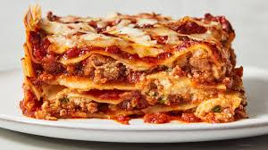

Home
Lasagna

Description
A classic lasagna is made by layering meat sauce (ragù), ricotta cheese mixture, mozzarella, and noodles, then baking until bubbly.
Brown beef and onion, simmer with marinara sauce. Combine ricotta, egg, and parmesan. Layer sauce, noodles, ricotta mixture, and mozzarella in a 9x13 pan, repeating layers.
Bake covered at 375°F for 30 minutes, then uncovered for 15 minutes.
Ingredients
- 1 lb ground beef or Italia sausage
- 1 small onion, diced
- 2 cloves garlic, minced
- 2 jars (24 oz each) marinara sauce
- 1 package (16 oz) lasagna noodles
- 1 container (15 oz) ricotta cheese
- 1 large egg
- 1/2 cup grated Parmesan cheese
- 1 lb shredded mozarella cheese
- 1 tsp dried oregano or fresh parsley
- Salt and black pepper to taste
Steps
- Preheat oven to 375°F (190°C).
- Brown the meat with onion and garlic in a large skillet; drain excess fat.
- Stir the marinara sauce into the meat and simmer for 10 minutes.
- Boil the lasagna noodles until al dente, then drain and set aside.
- Mix the ricotta cheese, egg, Parmesan, and herbs in a medium bowl.
- Spread 1 cup of meat sauce on the bottom of a 9x13 inch baking dish.
- Layer with noodles, 1/3 of the ricotta mixture, and 1/4 of the mozzarella.
- Repeat the layers (sauce, noodles, ricotta, mozzarella) two more times.
- Top with the remaining meat sauce and the final portion of mozzarella.
- Cover with foil and bake for 30 minutes.
- Remove the foil and bake for another 15 minutes until bubbly.
- Let rest for 15 minutes before slicing.